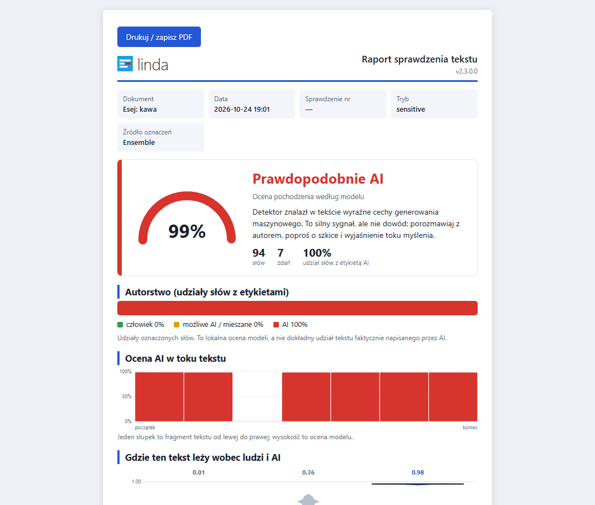

Dla zespołów, szkół i firm
Archiwizuj, porównuj i sprawdzaj teksty ponownie — bez wysyłania czegokolwiek do sieci.
Sprawdzanie wsadowe i eksport do CSV
Przeciągnij dowolną liczbę plików PDF, DOCX, TXT lub MD. Program sprawdzi je po kolei, a wyniki możesz zapisać w pliku CSV.
Licencja Organization
Jedna organizacja, jedna placówka, do 200 urządzeń; aktualizacje opłaconego roku. Roczna płatna subskrypcja odnawia się do anulowania. Analiza lokalna; stan licencji jest buforowany offline i okresowo sprawdzany online. Bezpłatna próba komercyjna trwa 14 dni kalendarzowych od pierwszego uruchomienia, bez płatnego klucza, rejestracji i automatycznej opłaty. Termin jest warunkiem licencji; aplikacja nie odlicza czasu. Dalszy użytek komercyjny wymaga płatnej licencji. Osobisty użytek niekomercyjny jest bezpłatny bez limitu czasu.
Porównywanie dokumentów
Porownywanie wersji i sprawdzanie AI w jednym oknie: program zestawia dwa dokumenty obok siebie (pokazuje identyczne akapity i doslowne zgodnosci) oraz wydaje niezalezny werdykt: czy tekst napisal czlowiek, wygenerowalo AI, czy zawiera mieszane poprawki.
Historia zostaje u Ciebie
Każde sprawdzenie jest zapisywane wraz z tekstem i wynikiem wyłącznie na Twoim komputerze: foldery, wyszukiwanie, sortowanie, usuwanie zbiorcze, automatyczne czyszczenie po 30, 90 lub 365 dniach. Możesz to wyłączyć w każdej chwili.
OEM, white-label, prawa wyłączne, kalibracja na zamówienie
Integracja Linda z Twoją platformą (LMS, antyplagiat, narzędzie wydawnicze lub HR), kalibracja na Twoich tekstach albo zakup praw wyłącznych: napisz na lindapro.support@proton.me — opisz przypadek użycia, wolumen i wdrożenie.


